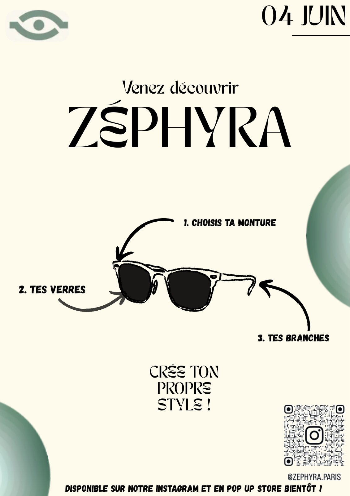
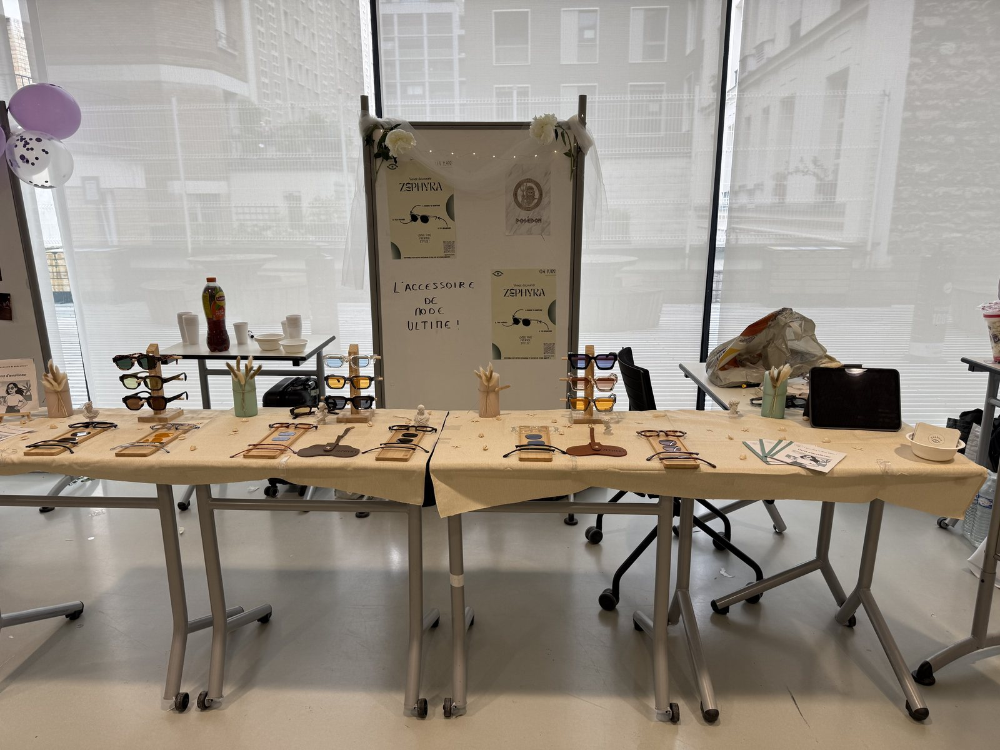
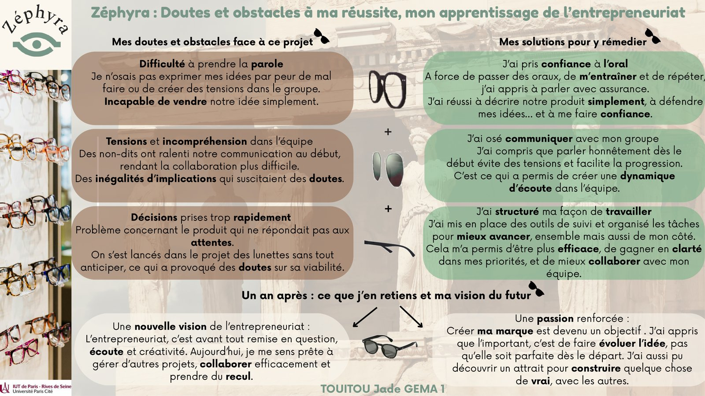
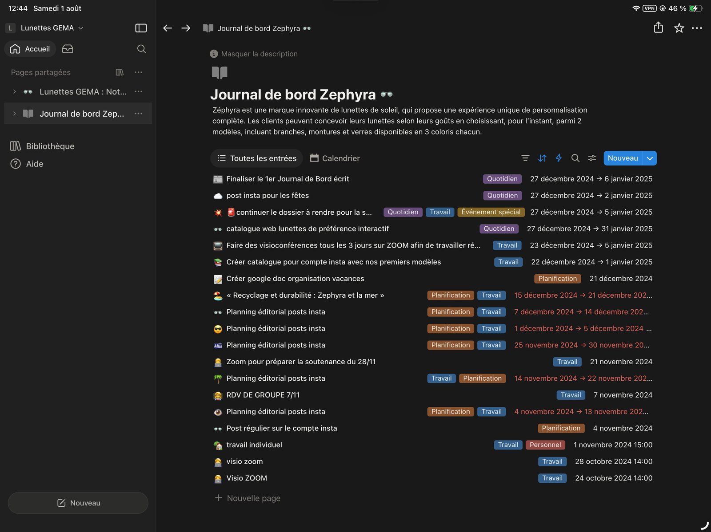
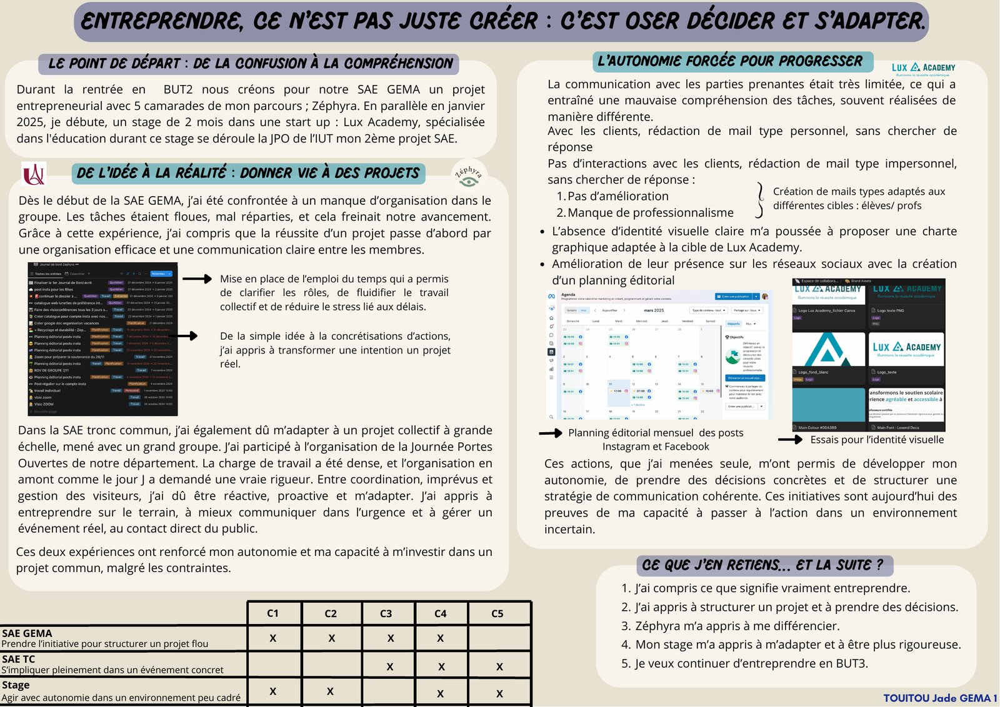

Mes études & diplômes
Un parcours général puis technologique qui m'a donné à la fois une culture économique et juridique solide et une pratique concrète de la gestion d'entreprise, en cohérence avec mon projet professionnel.
BUT Gestion des Entreprises et des Administrations
IUT de Paris - Rives de Seine, Université Paris Cité (75016) — Parcours Gestion Entrepreneuriat et Management des Activités (GEMA).
Ce parcours m'apporte une double compétence : la rigueur du tronc commun GEA (analyse des organisations, aide à la décision, pilotage des relations avec les parties prenantes) et une spécialisation entrepreneuriale (construction d'un business model, gestion et développement de la chaîne de valeur — marketing, RH, supply chain, risque financier). Plusieurs productions illustrent particulièrement cet apprentissage : le projet entrepreneurial Zéphyra, l'organisation de la Journée Portes Ouvertes et la SAÉ consacrée au groupe Emeis.
Zéphyra — Lunettes de soleil modulables
Projet entrepreneurial mené en groupe : conception d'une paire de lunettes de soleil modulables (montures, branches et verres interchangeables), plus durable, plus économique et plus personnalisable. Étude de marché, Business Model Canvas, positionnement de marque, cible et identité visuelle.
Première soutenance notée 10/20 — puis, après une remise en question complète de notre approche (étude de marché approfondie, proposition de valeur clarifiée, présentation restructurée), nouvelle présentation au Village des Talents devant un jury de professionnels : 18/20.
Un an après le lancement, j'ai pris le temps de faire le bilan de mes doutes et de mes apprentissages : la difficulté à prendre la parole et à défendre simplement notre idée, des tensions dans l'équipe liées à des non-dits, des décisions prises trop vite. J'y ai répondu en travaillant ma confiance à l'oral, en osant une communication plus honnête avec mon groupe, et en structurant mieux mon organisation (outils de suivi, répartition des tâches). Ce recul m'a confirmé une nouvelle vision de l'entrepreneuriat : avant tout de la remise en question, de l'écoute et de la créativité.
Lire mon retour d'expérience complet sur Zéphyra →



Journée Portes Ouvertes de l'IUT
Participation à l'organisation de la Journée Portes Ouvertes du département, un projet collectif à grande échelle mené avec un grand groupe : mise en place de l'emploi du temps de l'événement, coordination des équipes, gestion des imprévus et accueil des visiteurs le jour J. Cette SAÉ m'a appris à entreprendre sur le terrain, à communiquer dans l'urgence et à gérer un événement réel au contact direct du public — une première mise en pratique que j'ai retrouvée un an plus tard lors de l'organisation du cocktail de 800 collaborateurs au Carlton Cannes.

Cas Emeis (anciennement Orpea)
Situation d'Apprentissage et d'Évaluation consacrée à la crise de réputation du groupe Emeis. Analyse d'articles de presse, d'avis de familles et de la communication de l'entreprise, pour comprendre les causes profondes de la crise avant de formuler des recommandations stratégiques : communication plus transparente, valorisation des actions concrètes, meilleur accompagnement des familles.
Lire mon retour d'expérience complet sur la SAÉ Emeis →Baccalauréat général — Mention Assez Bien
Lycée Blaise Pascal, 91400 Orsay — Spécialités Sciences Économiques et Sociales (SES) et Histoire-Géographie, Géopolitique et Sciences Politiques (HGGSP), avec l'option euro espagnol.
C'est durant cette période que s'est confirmé mon goût pour l'économie et les sciences sociales, à l'origine de mon orientation vers la gestion des entreprises et des administrations.
Spécificités du BUT GEA — Parcours GEMA
Vs. formations concurrentes
Contrairement à un BTS, le BUT se déroule en 3 ans et alterne fortement théorie et mise en situation professionnelle (stages, SAÉ), avec une spécialisation progressive. Le parcours GEMA, en particulier, ajoute une dimension entrepreneuriale (business model, création de valeur) que l'on ne retrouve pas dans les parcours plus comptables ou RH du même diplôme.
Apports spécifiques à mon profil
Zéphyra m'a appris à construire et défendre un projet de A à Z ; la SAÉ Emeis m'a appris à analyser une situation complexe avant d'agir. Deux réflexes que j'ai directement réinvestis durant mon stage au Carlton Cannes.
Ce que j'en retiens
Trois années qui m'ont rendue plus structurée, plus autonome, et qui ont confirmé mon envie d'évoluer sur des postes alliant gestion des personnes et pilotage d'activité, notamment dans l'hôtellerie de luxe.